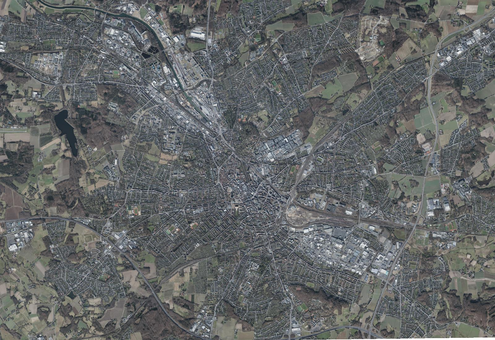

EU-gefördertes Forschungsprojekt
Kreuzungen
verstehen.
VerkehrsOS ist ein Forschungsprojekt von AIFOREU. Wir untersuchen, wie KI Lage- und Signalpläne erschließt und ihre Prüfung unterstützt.
Gemeinsam mit IOTEC GmbH. Für Kommunen und Planungsbüros.
Forschung mit
Bezug zur Praxis.
AIFOREU entwickelt VerkehrsOS gemeinsam mit der IOTEC GmbH im Rahmen eines Forschungsprojekts. Im Mittelpunkt steht die Frage, wie sich vorhandene Kreuzungspläne mithilfe von KI auswerten und nachvollziehbar prüfen lassen.
Der Prototyp dient dazu, diese Ansätze zu untersuchen und weiterzuentwickeln. Die fachliche Bewertung und Freigabe bleiben bei den Menschen, die mit den Plänen arbeiten.

Den Bestand
im Blick.
Aus Planunterlagen wird eine digitale Grundlage für die Verkehrsplanung. Die Visualisierung zeigt die Idee dahinter: Straßen, Zufahrten und Wege als zusammenhängendes Bild.
 VerkehrsOSVisuelle Demo
VerkehrsOSVisuelle DemoDer Knoten im Überblick.
Osnabrück · Berliner Platz
VerkehrsOS gemeinsam
weiterdenken.
Sie arbeiten mit Kreuzungsplänen? Wir besprechen Ihren Anwendungsfall und welche Fragen sich daraus für die weitere Forschung und Erprobung ergeben.
Forschungsprojekt besprechenForschung und Erprobung
Unser Prototyp konzentriert sich auf die Digitalisierung und Prüfung von Kreuzungsplänen.